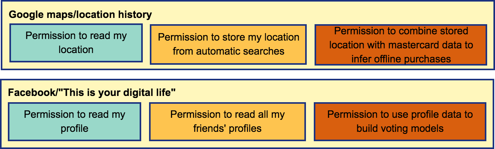
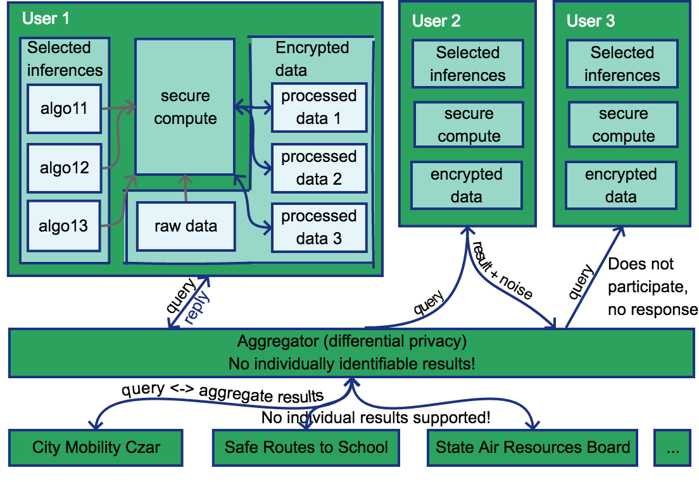

Privacy Improvements¶
Location data is very privacy sensitive (http://www.nature.com/doifinder/10.1038/srep01376). This is particularly true for a location timeline, since anonymization techniques fail if there are repeated patterns in the data. For example, identifying a users' most common location at night and during the day can help us identify their home and work locations.
But these repeated patterns are also very useful. At the personal level, we want to give people recommendations for their most common trips, or use their patterns to infer the characteristics of their travel. At the structural level, we want to aggregate the data from citizens to see repeated problems that can be targeted for fixing.
The primary difference between the intrusive and useful privacy-sensitive analyses is control and ownership.
Users should own their data, the analysis that runs on it, and the way in which the results are used. While users do currently get to control what raw data is collected from their smartphones, once the data has been collected, they lose control over it, and it can be re-shared in ways that they do not expect. This argues for a more mediated sharing experience at a higher level in the data stack. Some examples are

Note that this high level overview recurs in many scenarios, and there is ongoing work, including in the RISE lab, around addressing some of these issues. We may be able to use some of these in our own work. For example, check out this talk from Dawn Song.
This level of control involves integrating two existing research areas. An overall system diagram is

Computation on encrypted data/secure execution¶
Conceptually, for users to own their own data, they need to run a server that they maintain and that collects their data. They can then choose to install the analysis scripts that they want on the server, and see the results themselves.
Since few users run their own servers, this will typically involve storing encrypted data on shared infrastructure. But then how can users run algorithms against this encrypted data?
-
One option is to run algorithms directly against encrypted data. There has been prior work on searching encrypted text directly and decrypting it in the browser to display the text. However, for maximum flexibility and performance, we typically want to run analysis on servers instead of user phones, and to have access to the results to participate in aggregate queries. There has been more recent work in this area from the RISE lab, some potentially unpublished, which we should explore.
-
A second option is to use stored keys to decrypt the data before processing, and run the processing in a secure execution environment (e.g. SGX). Unfortunately, in order to decrypt the data, we need to store private keys, and have them accessible on the server for decryption. But then if the private keystore manager is compromised, then the attacker has access to your private key and all your data. Do web of trust/delegated authorization schemes (such as WAVE)[https://docs.google.com/document/d/1MGoL5wgVPyIdDJnEwA3We9USi3ZDKNy2pou_sppx6w8/edit?usp=sharing] solve this problem? And once the data is decrypted, root on the server where it is running will have access to it, which is why it needs to run in a hardware enclave(https://keystone-enclave.org/). Does it make sense to run full algorithms in a hardware enclave? It looks like it is currently used primarily for contract checking. Will the overhead be too high?
Privacy-preserving aggregation¶
For structural analysis, we need to see results across a wide range of users. Conceptually, users can also choose to participate in aggregate queries for results, with controls for which results to share and how much aggregation they want to participate in.
Related work:¶
- OpenPDS: Protecting the Privacy of Metadata through SafeAnswers
- PDVLoc: A Personal Data Vault for Controlled Location Data Sharing
This kind of aggregate query is typically handled using differential privacy. However, differential privacy is challenging for timeseries data since it has so much structure. However, there has been prior work on differential privacy for certain kinds of aggregate queries against timeseries data.
Related work:¶
- Privacy-Preserving Aggregation of Time-Series Data
- Differentially private aggregation of distributed time-series with transformation and encryption
Types of queries:¶
We would like to support the following types of queries.
- Point queries: These represent the kinds of queries that could be answered by a sufficiently complex sensor embedded in the infrastructure. For example:
- How many people travelled on road segment x (where x is the OSM id such as https://www.openstreetmap.org/way/242298339)
- What is the mode share on road segment x (e.g. 25% walk, 25% bike, 50% car)?
- Both of the above queries over various time ranges (e.g. 3pm - 5pm on weekdays in the summer, etc)
- Trajectory queries: These are still count queries, but they represent information that you can only find out through trajectories. For example:
- Of the people passing through the intersection of Castro and the train tracks, how many are turning left?
- How many people are turning onto Shoreline right after that?
- Does this vary by mode?
- Where do people who come to the train station come from?
- counts on each of the access roads?
- for each access road, counts along blocks that are the origins of the trips?
- for each of the access roads, how long did it take for people to reach the train station along that route?
- Where do people who leave Mountain View City Hall between 3pm and 5pm on weekdays in the summer go (can be a polygon)?
- What is the distribution of travel times for travelers between Mountain View City Hall and the google campus in North Bayshore?
- Model queries: In some ways, these are the easiest because they use standard machine learning, and there is a lot of existing work on federated databases. We should be able to do this for some subset of
- Extract features of interest (e.g. time, cost, etc) from the aggregate of all the trips
- Create a logistic regression model and determine the population-level coefficients for the features
- Ideally, you would be able to do this for subsets of the population that can be chosen by the previous two methods - e.g.
- find the time and cost coefficients for all people who travel along Castro street.
- find the time and cost coefficients for all people who arrive at the Mountain View train station